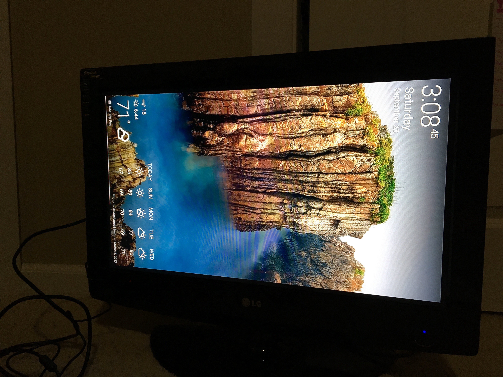

[9.30.2017]
Dakboard, Physics, and Music
As September is coming to a close and pumpkin spice everything is settling into the Northwest, I've been reorganizing my projects, working a new job, doing schoolwork, and starting the long road of applying to college.
Since I saw you last, I started and finished a job renting out instruments to kids and their parents for the school year. I now have a plethora of basic knowledge about all the band and orchestra instruments.
Physics has started, and it's a blast. We've honed in on some of the projects we'll be making this year in class, I'll be sure to write posts about them if I remember to take pictures. We'll be making a Reuben's tube, a 2D Reuben's tube, a sand pendulum, and we're going to forge a sword! Very exciting and science-y things.
In mid-September, I was hired to build a Dakboard, a digital wall
hanging that acts as a calendar, picture display, clock, reminder
board, and weather station all at once. I've gotten all the tech
ready to go, we're just waiting on the monitor to finish the job.
Here's a picture of what my display looked like:

That's my old TV that I use for Raspberry Pi, with an altered display (since the monitor will be hung vertically). I've changed some of the boot code to start up automatically at the Dakboard screen, rather than having to set it up every single time.
I received my new Nucleo-F042K632 in the mail, since my other one turned out to be a lemon. The linux partition on my laptop is being finnicky and won't boot up at the moment, so I can't play with my nucleo yet, sadly. I've got my friend galois, who's at Stanford, helping me figure out why it isn't working the way it should. Debugging...yay!
In addition to all this, I'm filling out college applications and brainstorming essays, teaching myself the mandolin (this song), and working hard on mastering Ludovico Einaudi's Oltremare on the piano. Yikes! It's turning out to be a busy year already, but I've got plans, and I can't wait to share them with you when I start putting them to action.
Until then!
{thallia}